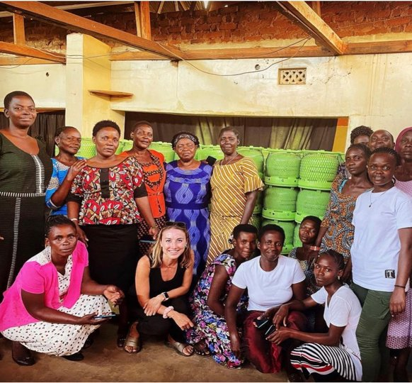
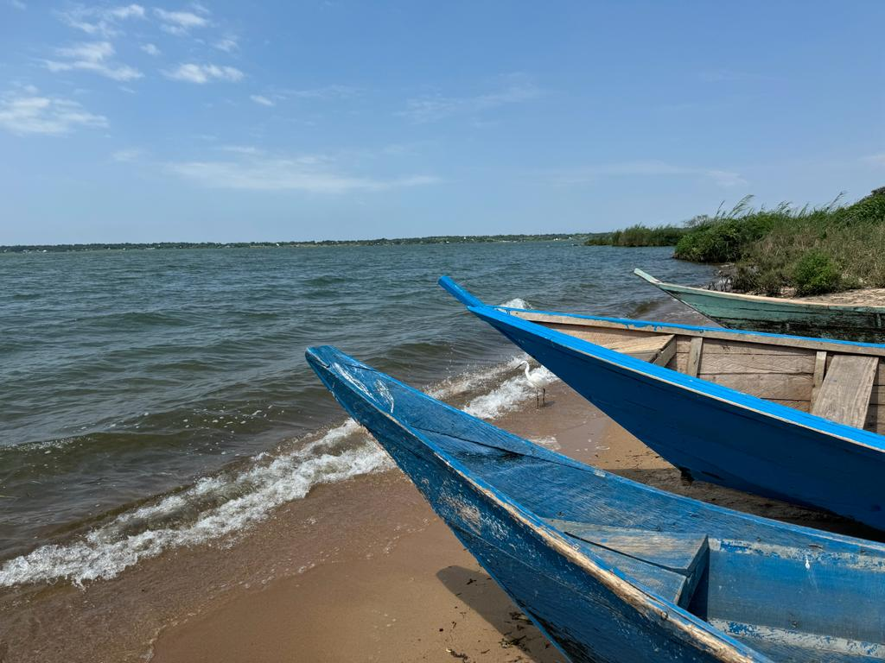
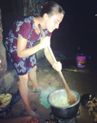
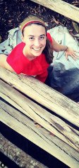
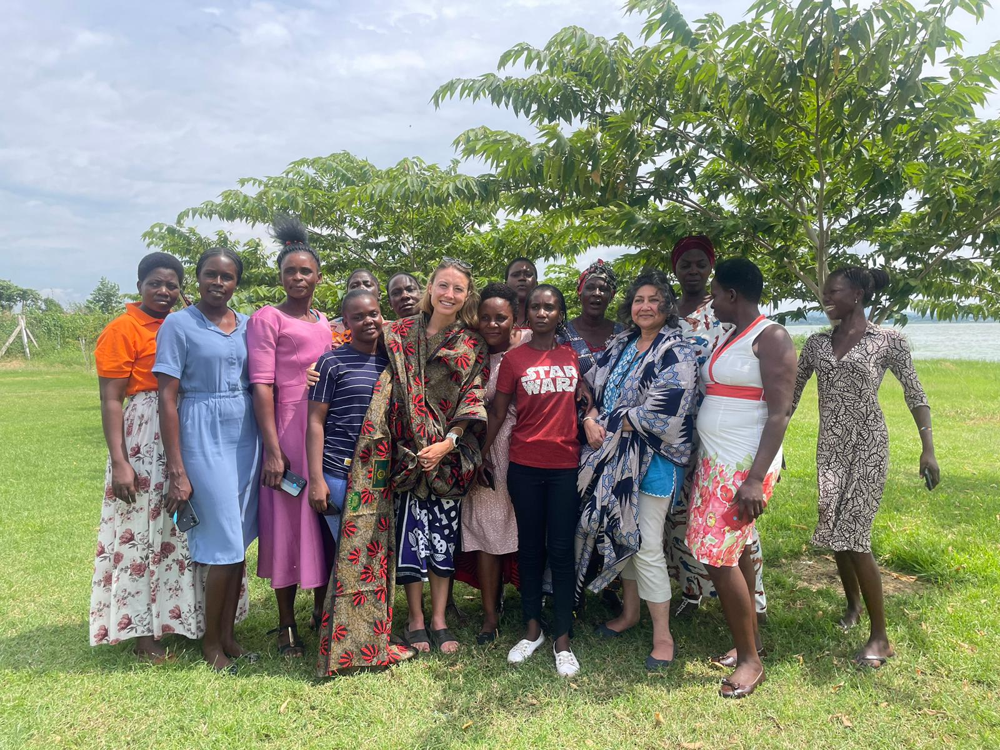
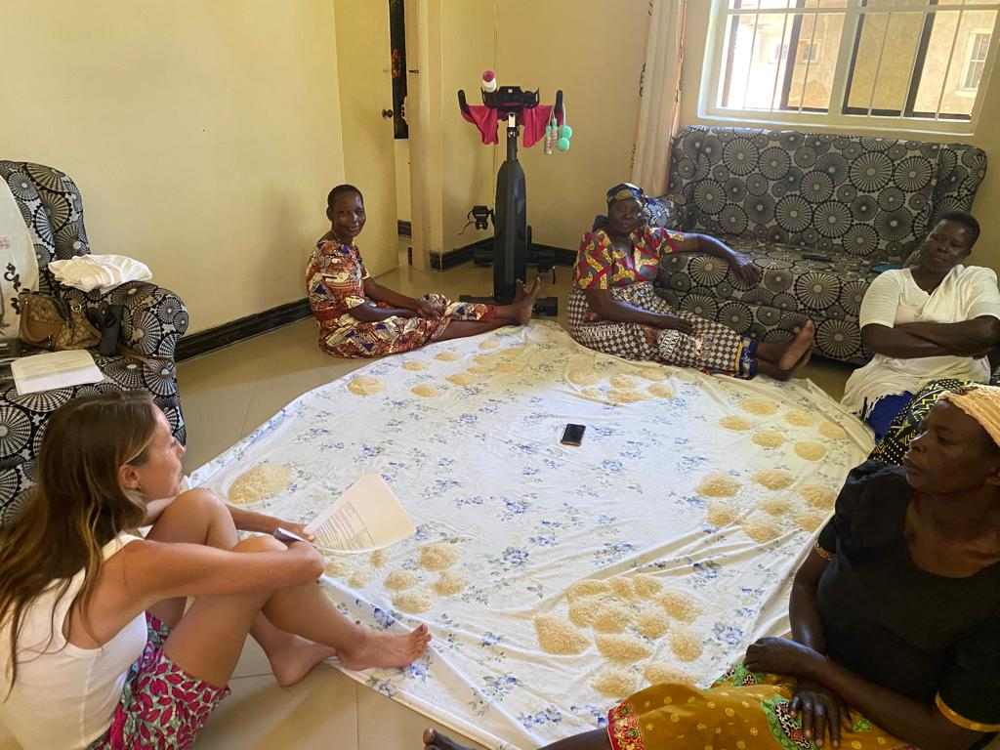
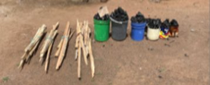
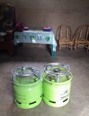

Increasing the effectiveness, adoption, and affordability of engineering technology in low- and middle-income countries to avert health and climate impacts.
Research on Energy, Air quality, Climate & Health — combining rigorous quantitative methods with deep ethnographic fieldwork across East Africa and beyond.
Meet the Lab Get in Touch



I am an Assistant Professor of Environmental Engineering at the University of Notre Dame, where I lead the REACH Lab. My research sits at the intersection of energy access, air quality, and human health — with a focus on the billions of people who rely on solid biomass fuels for cooking and heating.
What distinguishes our approach is the pairing of robust quantitative methods from biostatistics and impact evaluation with deep ethnographic qualitative work. I have conducted extensive fieldwork in East Africa, living and working alongside communities to understand how and why households make energy choices — and designing and testing interventions to increase their effectiveness, adoption, and affordability.
Before joining Notre Dame, I was a postdoctoral researcher at Columbia University in Environmental Health Sciences. I received by MS and PhD in Energy & Resources from UC Berkeley. I went to Notre Dame for my undergraduate degree in Environmental Engineering. When I'm not working on energy access, I enjoy long distance running, walking my dog, Barkeley, and hiking with my family.
Understanding how to transition people to clean energy technologies requires more than engineering analysis alone. Our work bridges disciplines: we bring biostatistics and impact evaluation to bear on rigorous causal questions, while grounding our work in deep ethnographic understanding of the communities we work with.
This means spending real time in the field — piloting surveys, sitting in homes conducting interviews and focus groups, talking with charcoal and gas sellers, talking with community members, and collecting personal exposure measurements.
Our fieldwork is largely based in East Africa (Tanzania and Kenya), but we also have projects working on affordability across the continent, and we model the health and climate impacts of interventions at regional and global scales.




We study the adoption and sustained use of cleaner cooking technologies — LPG, and electric cooking — in low- and middle-income countries, with a focus on what makes interventions affordable.
Using field measurements, we characterize indoor and outdoor air pollutant exposures — especially in communities that bear disproportionate pollution burdens.
Energy transitions affect greenhouse gas emissions, short-lived climate pollutants, and regional climate feedbacks. We model these relationships to quantify the climate co-benefits of clean cooking and energy access programs and policy.
We apply rigorous experimental and quasi-experimental methods to evaluate the real-world effectiveness of environmental interventions.
Women are the primary cooks in many households across LMICs. They bear the brunt of the financial and health burden of polluting fuels. We study how women are affected by energy access interventions and how such interventions may lessen their work, rather than add to it.
For a complete list, see my Google Scholar or ORCID profile.
I welcome inquiries from prospective graduate students, postdoctoral researchers, and collaborators with interests in clean energy, air quality, and global health. Feel free to reach out about current projects or opportunities in the lab.